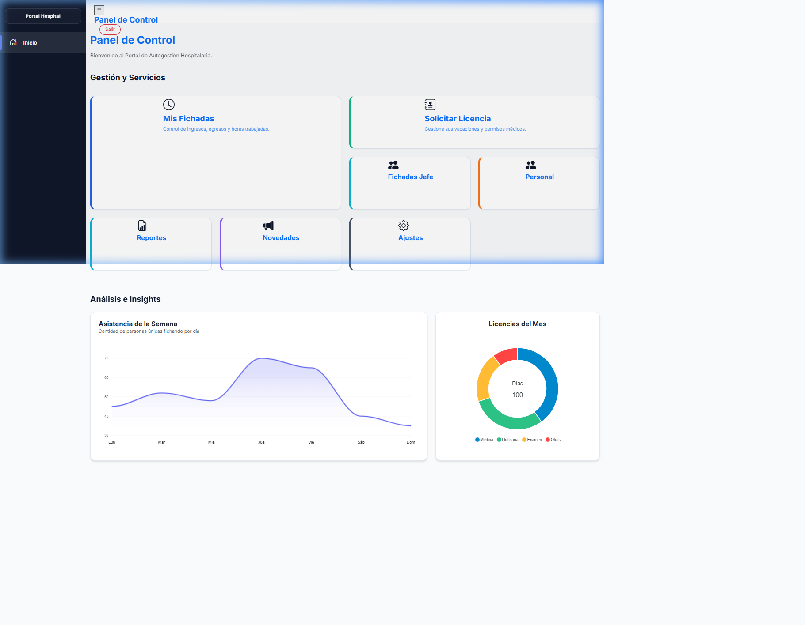
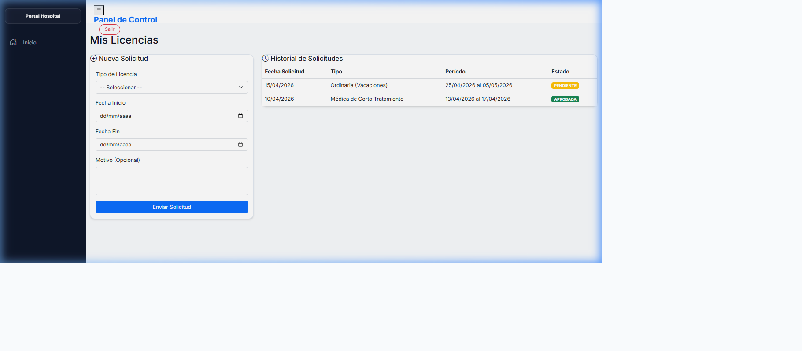
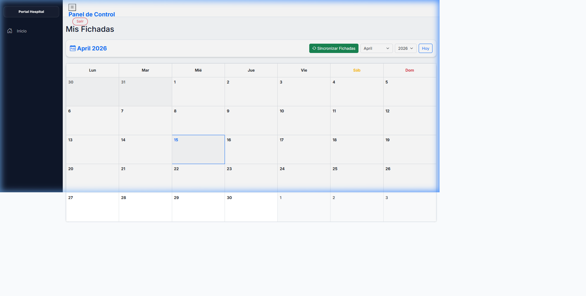

Bienvenido al nuevo Portal de RRHH. Este manual te guiará a través de las funcionalidades del sistema, diseñado para que gestiones tu presentismo y licencias de forma rápida y sencilla.
Al ingresar, verás tu pantalla principal. Está diseñada con una Grilla Bento que te permite acceder a los servicios más importantes de un solo clic.

Solicitar un permiso o vacaciones nunca fue tan fácil.

Hacé clic en "Solicitar Licencia", elegí el tipo y la fecha, y el sistema validará automáticamente que no haya solapamientos antes de enviar el pedido a tu jefe.
Consultá tus fichadas del reloj en tiempo real.

El sistema muestra badges de colores para Entradas (verde) y Salidas (azul) sincronizadas directamente con el sistema de relojes del hospital.
Hospital Portal - Software de Gestión de Recursos Humanos